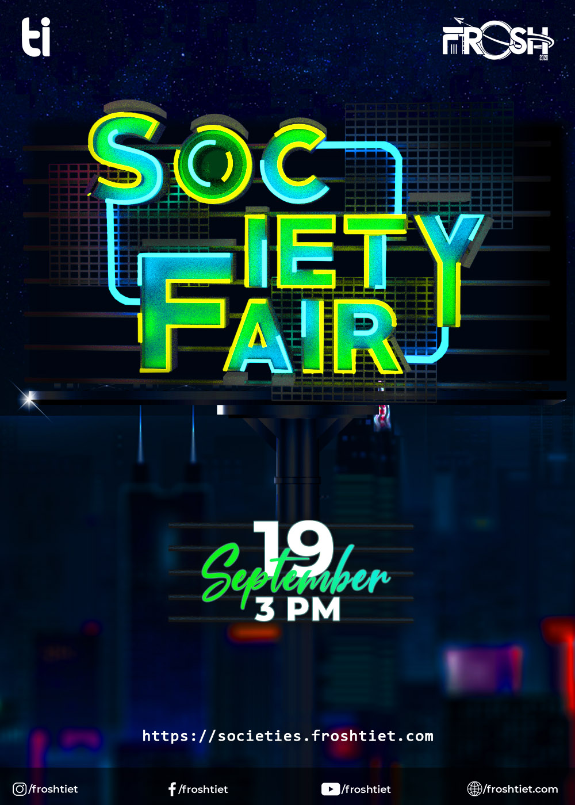

SOCIETY FAIR

Welcome Freshers!
Society fair is the most vibrant exhibition of all societies offered in TIET with the aim to encourage innovation and experimentation, and to provide the students with enriching opportunities in their fields of interest to ensure dynamic overall development. With a plethora of departmental societies and student chapters, TIET boasts of more than 60 societies, all of which are registered under the guidance and supervision of our experienced faculty members. Frosh brings all the societies to your table so you can take your pick and achieve unimaginable heights.